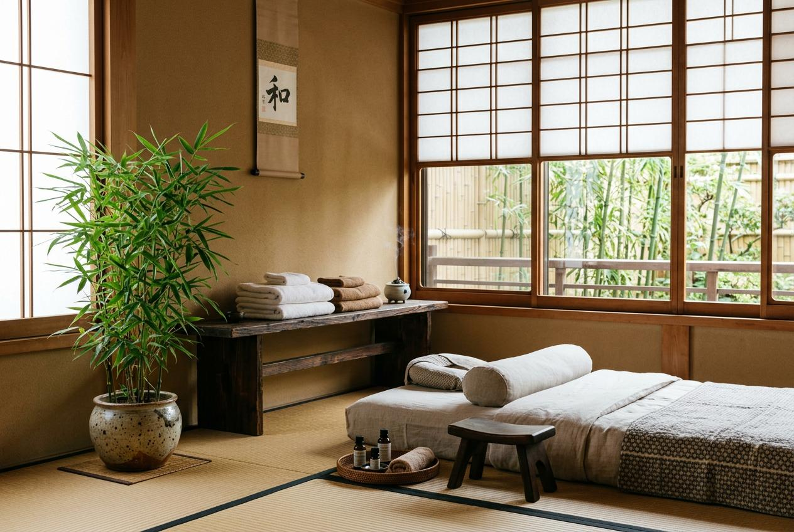

久坐辦公讓肩頸長期緊繃，許多上班族男士開始尋找放鬆方式。想了解台北男士到府按摩推薦的選擇，這篇文章帶你認識服務內容與價格說明，從預約流程到注意事項，幫助你找到適合自己的方案。
為什麼男士會選擇按摩服務？
長時間坐在電腦前工作，肩頸與上背容易累積緊繃感，這是許多上班族男士的共同困擾。當肌肉長期處於緊張狀態，不僅影響專注力，連下班後的休息品質也會打折扣。
選擇按摩服務，是不少男士在忙碌生活中為自己安排的放鬆時刻。透過專業手法的協助，能讓緊繃的身體獲得紓緩。相較於出門奔波，到府按摩省去交通時間，在家即可享受服務，對時間有限的人來說格外方便。
台北男士到府按摩推薦常見服務項目
不同的按摩服務針對的身體需求各有側重，以下列出四項常見的選擇：
肩頸按摩
針對長期低頭與固定姿勢造成的肩頸僵硬，以手法梳理肌肉線條，適合日常保養與放鬆。
全身肌肉按摩
涵蓋背部、腿部與手臂等部位，讓全身各處獲得均衡的放鬆，適合希望全面紓緩的客人。
運動後肌肉按摩
針對運動後的身體狀態，協助緩和肌肉緊度，讓運動後的恢復期更加舒適。
久坐族肩背按摩
專為辦公族群設計，著重於上背部與肩胛區域，緩解長時間坐姿帶來的僵硬與不適。
台北男士按摩服務流程怎麼安排？
預約到府按摩的流程並不複雜，按照以下五步驟即可完成安排：
- 選擇服務項目：依照自身需求挑選適合的按摩類型與時長。
- 確認到府地址：提供詳細的住址資訊，包含路段、樓層與大門口特徵。
- 說明交通動線：確認是否有電梯、停車位或社區管理室動線，方便師傅順利抵達。
- 預約時段確認：與店家協調可配合的日期與時間，保留雙方空檔。
- 準備按摩空間：在預約時間前整理出足夠的空間，讓服務順利進行。
台北男士按摩價格通常怎麼看？
到府按摩的價格會受到多項因素影響，了解這些變因有助於做出符合預算的選擇。以下是常見的價格影響因素整理：
| 影響因素 | 價格影響說明 |
|---|---|
| 服務時間長短 | 60分鐘與90分鐘的費用有所差異，時間越長價格相對較高，建議依照身體狀況選擇。 |
| 到府交通距離 | 距離較遠的區域可能產生額外車馬費，預約前可先詢問是否包含在服務費用內。 |
| 服務項目種類 | 全身按摩與局部肩頸按摩的價格不同，項目越全面費用也會隨之調整。 |
| 預約時段 | 深夜或假日的時段可能會有額外加價，平日白天通常較為優惠。 |
建議在預約前先與店家確認報價內容。價格雖然重要，但服務品質與師傅經驗同樣值得納入考量。

台北男士按摩推薦怎麼選？
挑選時可以從以下幾個角度評估：
- 師傅資歷：了解師傅的專業背景與服務年資，經驗豐富的師傅更能掌握施力與節奏。
- 服務內容明確：選擇項目與價格標示清楚的店家，減少預約時的疑慮。
- 顧客回饋：參考其他客人的體驗心得，了解實際服務品質與態度。
- 溝通順暢：預約過程中能感受到店家回覆的專業度與耐心，後續服務也更安心。
到府按摩與門市按摩有什麼差別？
兩種服務形式各有特點，可以依照自己的生活型態來決定：
到府按摩的優點在於不用出門，結束後可以直接休息，特別適合下班後體力已經消耗殆盡的上班族。門市按摩則有專屬的環境與設備，氛圍上可能比較完整。若家中空間有限，或者喜歡外出轉換心情，門市也是不錯的方向。
無論選擇哪一種，重點在於找到讓自己感到放鬆與信任的方式。
預約前需要注意哪些事項？
為了讓體驗更加順利，以下幾點建議提前確認：
- 家中是否有足夠空間供師傅擺放工具與操作。
- 提前告知社區管理室有訪客抵達。
- 若有特定身體狀況或舊傷，預約時主動說明，讓師傅調整手法。
- 確認電話或通訊方式暢通，以便師傅抵達前聯繫。
- 按摩前避免空腹或剛吃完大餐，讓身體處於舒適狀態。
選擇按摩服務的重點整理
從肩頸僵硬到全身放鬆，按摩是許多男士在忙碌生活中為自己預留的調劑。認識台北男士到府按摩推薦的服務項目與價格結構後，可以更有方向地做出選擇。
若你正在尋找經驗豐富、服務細膩的到府按摩，金手指按摩提供專業的男士按摩服務，從預約到服務完成，每個環節都注重客人的感受與需求。不妨從一次體驗開始，感受身體逐漸恢復輕鬆的變化。
常見問題
到府按摩的價格通常包含哪些內容？ ▼
一般來說，報價會包含師傅的服務費與基本交通費。若距離較遠或指定特殊時段，可能會有額外費用，預約前可先詢問明細。
到府按摩需要準備什麼？ ▼
準備一處平坦的空間即可，師傅通常會攜帶所需用品。若有個人偏好的毛巾或精油，也可以提前告知。
到府按摩與門市按摩的價格差很多嗎？ ▼
到府按摩通常會比門市略高，因為包含交通成本。但省去往返時間與車資後，整體差距其實不大，可依個人方便性來決定。
如何確認預約的時段是否有效？ ▼
完成預約後，店家通常會提供確認訊息。建議保留對話紀錄，並在預約當天保持電話暢通，以便師傅抵達前聯繫。
可以指定特定的按摩師傅嗎？ ▼
部分店家接受指定師傅，但需視該師傅的排程而定。若希望指定，建議提前預約並告知店家偏好。